21 linhagens moldam os personagens de Varel — cada uma com sua distribuição de status, atributos iniciais e habilidade racial.
🧝 Elfos
Sábios e EternosConhecidos pela longevidade, elegância e ligação profunda com a natureza e a magia. Sua sociedade valoriza o conhecimento e o aperfeiçoamento constante.
- Status: 40 pontos para dividir entre Vida e Mana
- Atributos: +3 Intelecto e +2 Agilidade
- Habilidade racial: Sabedoria Ancestral — percepção refinada para compreender magias, identificar criaturas e interpretar conhecimentos antigos, com precisão arcana
- Bônus: começa com uma habilidade mágica gratuita fixa no Rank B
 Elfos
Elfos
👤 Humanos
Adaptáveis e DeterminadosHumanos não possuem uma característica sobrenatural específica, mas sua capacidade de adaptação permite que sigam praticamente qualquer caminho.
- Status: 50 pontos para dividir entre Vida e Mana
- Atributos: +2 em dois atributos à escolha
- Habilidade racial: Versatilidade — escolha uma perícia para receber +3 permanentemente
- Bônus: começa com uma habilidade adicional de Rank C
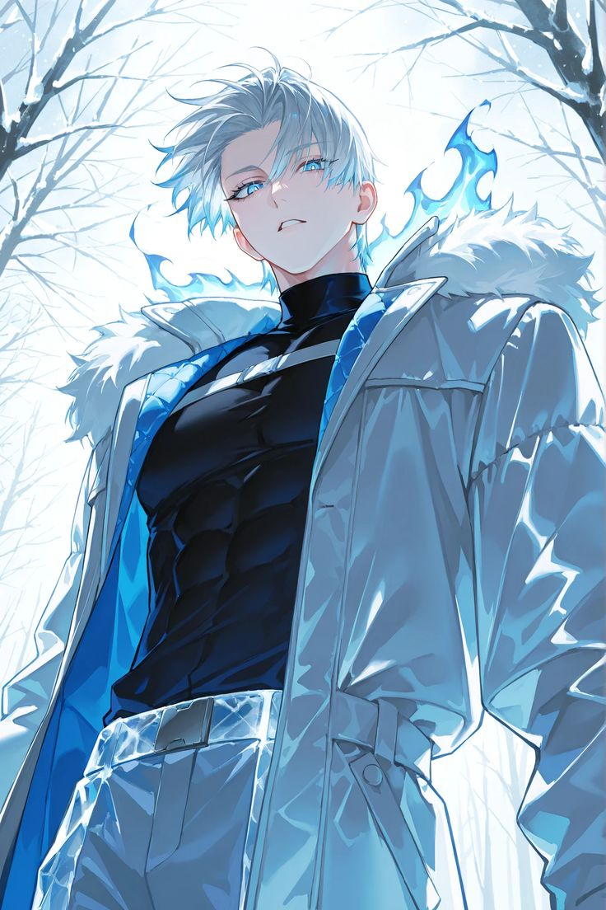
Humanos🐉 Draconis
Herdeiros dos DragõesSeres que possuem uma ligação espiritual com dragões. Sua aparência varia de acordo com sua linhagem e elemento.
- Status: 60 pontos para dividir entre Vida e Mana
- Atributos: +3 Força e +2 Resistência
- Habilidade racial: Herança Dracônica — escolha um elemento — você recebe resistência a ele e manifesta uma característica física de dragão
- Bônus: começa com uma habilidade elemental gratuita de Rank C
- Especial: escolha duas partes do corpo para receber características dracônicas, como asas, chifres, cauda ou escamas
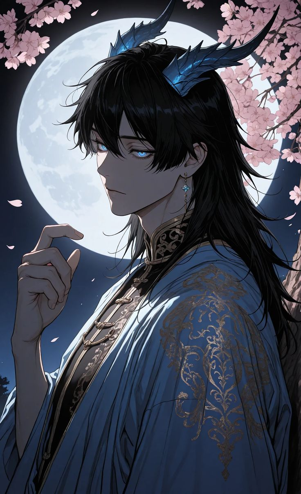
Draconis🧛 Vampiros
Filhos da NoiteUma raça ancestral que utiliza a energia vital de outros seres para manter seu próprio corpo.
- Status: 50 pontos para dividir entre Vida e Mana
- Atributos: +3 Agilidade e +2 Presença
- Habilidade racial: Sede de Sangue — uma vez por turno, ao causar dano corpo a corpo, recupera uma pequena quantidade de Vida
- Bônus: visão noturna e sentidos sobrenaturais
- Fraqueza: luz solar intensa reduz suas capacidades
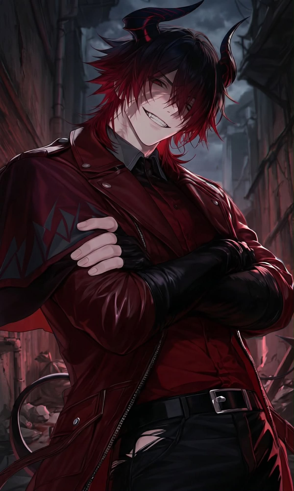
Vampiros👹 Malus
Os Filhos da ForçaUma raça conhecida por sua força física e cultura extremamente competitiva. Entre os Malus, poder e inteligência são sinais de respeito.
- Status: 70 pontos para dividir entre Vida e Mana
- Atributos: +4 Força e +1 Intelecto
- Habilidade racial: Instinto de Sobrevivência — quando estiver abaixo de 50% de Vida, recebe +2 em testes físicos
- Bônus: começa com uma habilidade física de Rank C
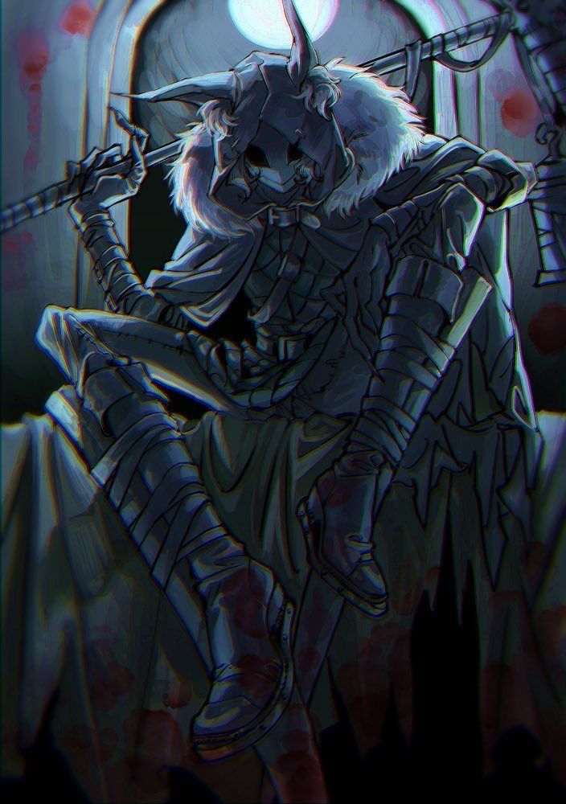
Malus😇 Serafins
Filhos da LuzUma das raças mais raras do mundo. Serafins possuem uma ligação natural com energia divina e são capazes de realizar feitos que outras criaturas considerariam milagres.
- Status: 40 pontos para dividir entre Vida e Mana
- Atributos: +3 Espírito e +2 Intelecto
- Habilidade racial: Bênção Celestial — pode restaurar uma pequena quantidade de Vida de uma criatura através do toque
- Bônus: começa com uma habilidade sagrada gratuita de Rank B
- Especial: possui asas e pode desenvolver voo
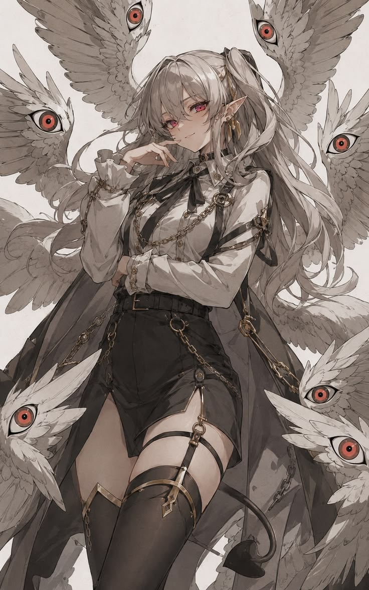
Serafins🦊 Kitsunes
Mestres das IlusõesSeres espirituais conhecidos por sua inteligência, astúcia e domínio sobre ilusões.
- Status: 45 pontos para dividir entre Vida e Mana
- Atributos: +3 Presença e +2 Agilidade
- Habilidade racial: Ilusão Espiritual — cria uma ilusão visual ou sonora capaz de enganar criaturas comuns
- Bônus: começa com uma habilidade de ilusão de Rank C
- Especial: pode desenvolver novas caudas ao aumentar seu poder
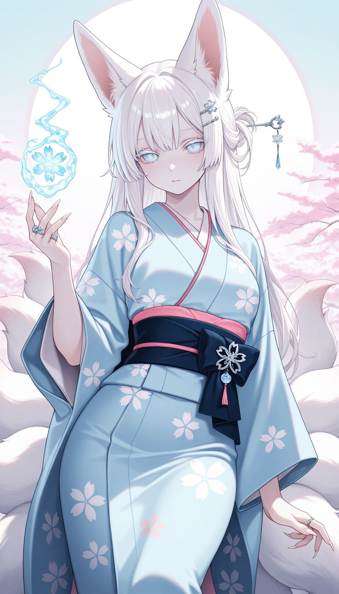
Kitsunes🐺 Bestiais
Filhos do InstintoPovos humanoides que possuem características de animais. Cada Bestial carrega características relacionadas ao seu animal ancestral.
- Status: 60 pontos para dividir entre Vida e Mana
- Atributos: +3 Agilidade e +2 Percepção
- Habilidade racial: Instinto Animal — escolha um animal ancestral e receba uma habilidade sensorial relacionada a ele
- Bônus: escolha uma característica física: garras, presas, chifres, cauda, audição aguçada ou visão aprimorada
- Especial: pode desenvolver uma habilidade baseada no animal escolhido
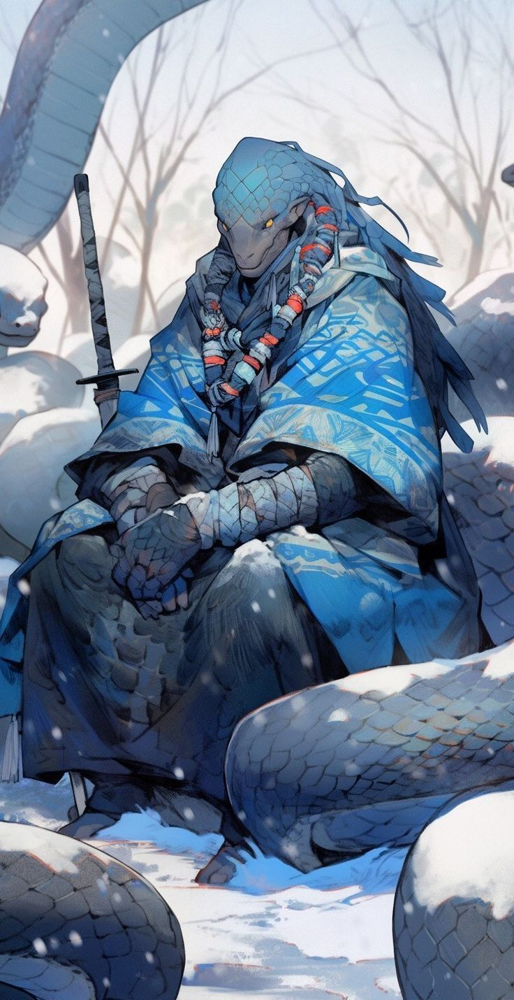
Bestiais🧌 Orcs
Guerreiros IncansáveisUma raça conhecida por sua resistência, força e tradição guerreira.
- Status: 75 pontos para dividir entre Vida e Mana
- Atributos: +3 Força e +2 Resistência
- Habilidade racial: Brutalidade Orc — uma vez por combate, adiciona +1 dado ao dano de um ataque físico
- Bônus: resistência a efeitos físicos
- Especial: ao chegar a 0 de Vida, pode permanecer consciente por mais 1 turno uma vez por descanso
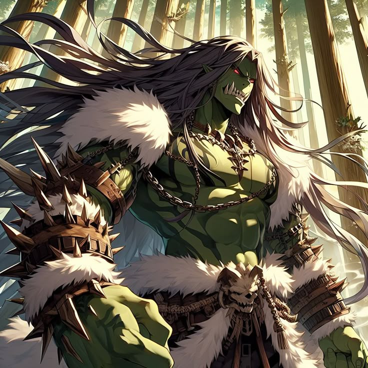
Orcs🧚 Fadas
Espíritos EncantadosSeres pequenos conectados à magia natural. Apesar de seu corpo frágil, possuem grande potencial mágico.
- Status: 30 pontos para dividir entre Vida e Mana
- Atributos: +3 Intelecto e +2 Agilidade
- Habilidade racial: Pó Feérico — cria partículas mágicas capazes de iluminar, distrair ou revelar criaturas
- Bônus: +2 em testes relacionados à magia
- Especial: possui asas e pode voar
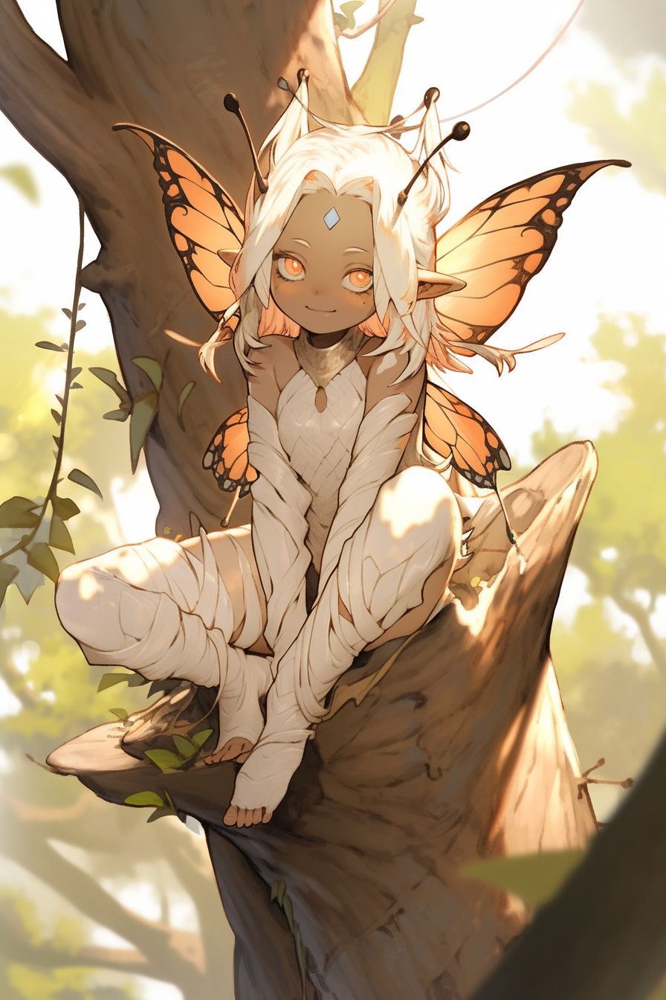
Fadas🧜 Tritões
Filhos dos OceanosHabitantes das profundezas que possuem uma ligação natural com o mar.
- Status: 55 pontos para dividir entre Vida e Mana
- Atributos: +3 Resistência e +2 Espírito
- Habilidade racial: Filhos do Mar — pode respirar debaixo d’água e nadar com grande velocidade
- Bônus: resistência a efeitos de pressão e água
- Especial: pode se comunicar com criaturas marinhas
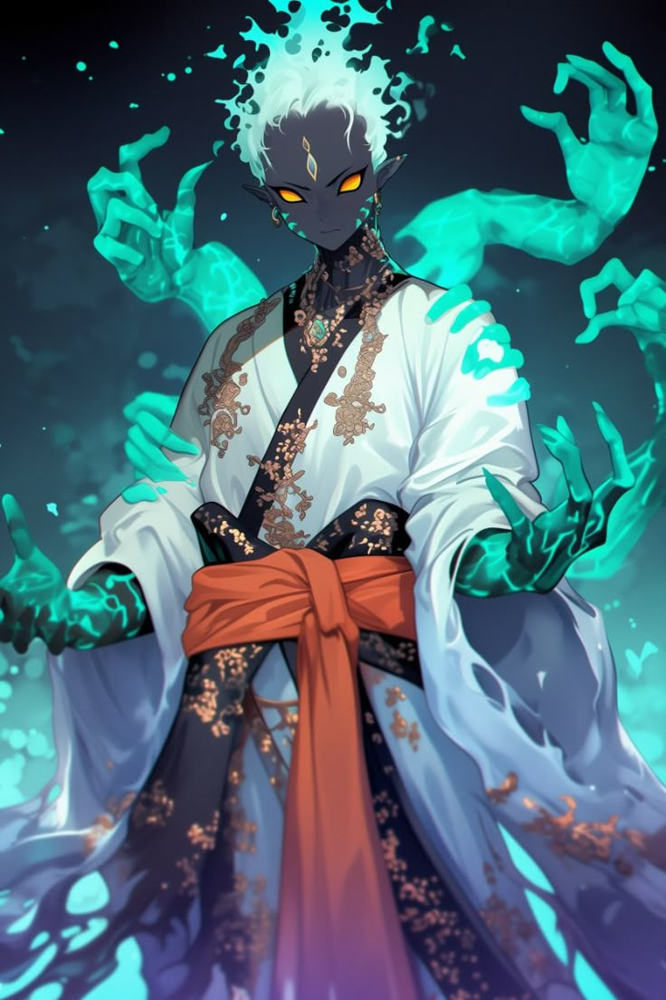
Tritões🗿 Gigantes
Herdeiros dos TitãsUma raça ancestral que quase desapareceu. Seu tamanho e força são muito superiores aos das demais raças.
- Status: 90 pontos para dividir entre Vida e Mana
- Atributos: +5 Força
- Habilidade racial: Força Colossal — consegue carregar, empurrar e destruir objetos que outras raças não conseguiriam
- Bônus: +2 dano utilizando armas grandes
- Penalidade: -1 Agilidade
- Especial: seu tamanho pode variar de acordo com sua linhagem
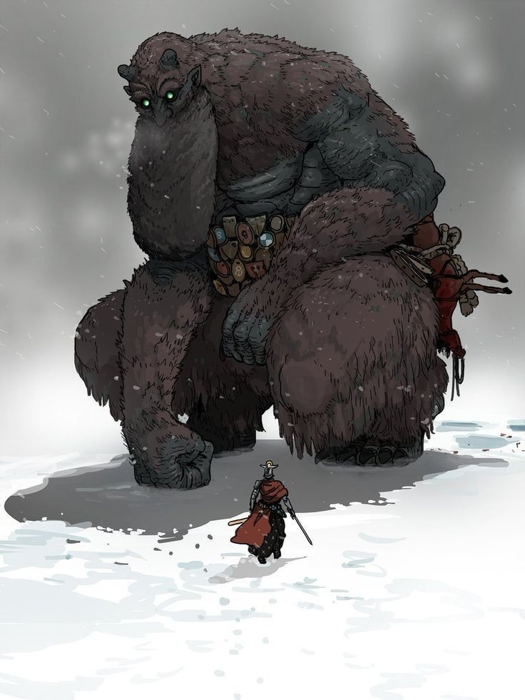
Gigantes👻 Eidolons
Almas EncarnadasSeres cuja existência está ligada ao mundo espiritual. Alguns nasceram como espíritos, enquanto outros retornaram à vida por meios desconhecidos.
- Status: 30 pontos para dividir entre Vida e Mana
- Atributos: +3 Espírito e +2 Agilidade
- Habilidade racial: Forma Etérea — pode atravessar pequenas superfícies durante alguns segundos
- Bônus: resistência a efeitos espirituais
- Especial: não precisa dormir da mesma forma que criaturas vivas
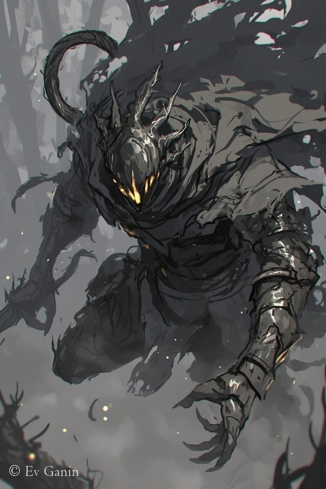
Eidolons🧬 Quimeras
Seres da MisturaCriaturas formadas pela combinação de diferentes espécies. Cada Quimera possui características únicas.
- Status: 60 pontos para dividir entre Vida e Mana
- Atributos: +2 em dois atributos à escolha
- Habilidade racial: Mutação — escolha uma característica animal ou monstruosa para incorporar ao corpo
- Bônus: escolha uma segunda característica física menor
- Especial: pode desenvolver novas mutações durante a campanha
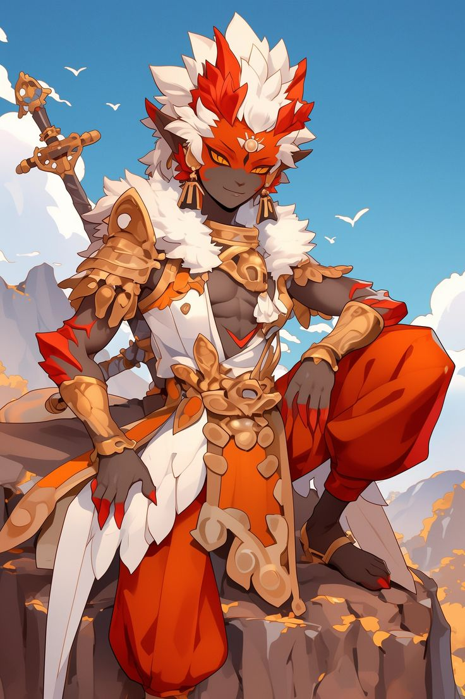
Quimeras🔮 Arcanos
Corpos de ManaSeres cuja existência é parcialmente formada por energia mágica.
- Status: 25 pontos para Vida e 50 pontos para Mana
- Atributos: +4 Intelecto e +1 Espírito
- Habilidade racial: Corpo Arcano — pode converter parte de sua própria Mana em energia ofensiva
- Bônus: recupera Mana adicional durante descansos
- Fraqueza: possui menos Vida que a maioria das raças
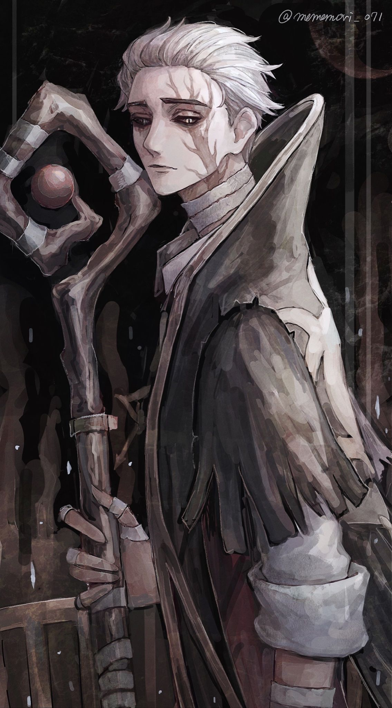
Arcanos⏳ Cronianos
Aqueles que Tocaram o TempoSeres afetados por anomalias temporais. Alguns possuem lembranças de acontecimentos que ainda não aconteceram.
- Status: 45 pontos para dividir entre Vida e Mana
- Atributos: +3 Agilidade e +2 Intelecto
- Habilidade racial: Eco Temporal — uma vez por descanso, pode repetir uma ação simples realizada no turno anterior
- Bônus: +2 em testes de iniciativa
- Especial: efeitos que alteram sua passagem de tempo possuem duração reduzida
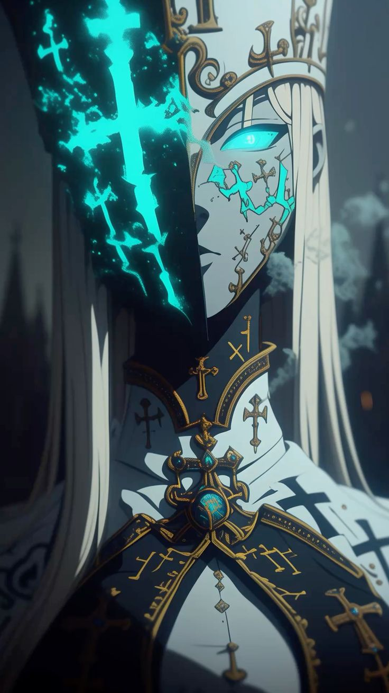
Cronianos🌌 Astralis
Filhos das EstrelasSeres que carregam fragmentos de energia celestial em seus corpos. Pequenas marcas luminosas percorrem sua pele como constelações.
- Status: 45 pontos para dividir entre Vida e Mana
- Atributos: +3 Intelecto e +2 Espírito
- Habilidade racial: Poeira Estelar — manifesta pequenos fragmentos de energia celestial que podem iluminar ou causar dano mágico
- Bônus: resistência a dano mágico celestial
- Especial: suas marcas brilham mais intensamente conforme sua força aumenta
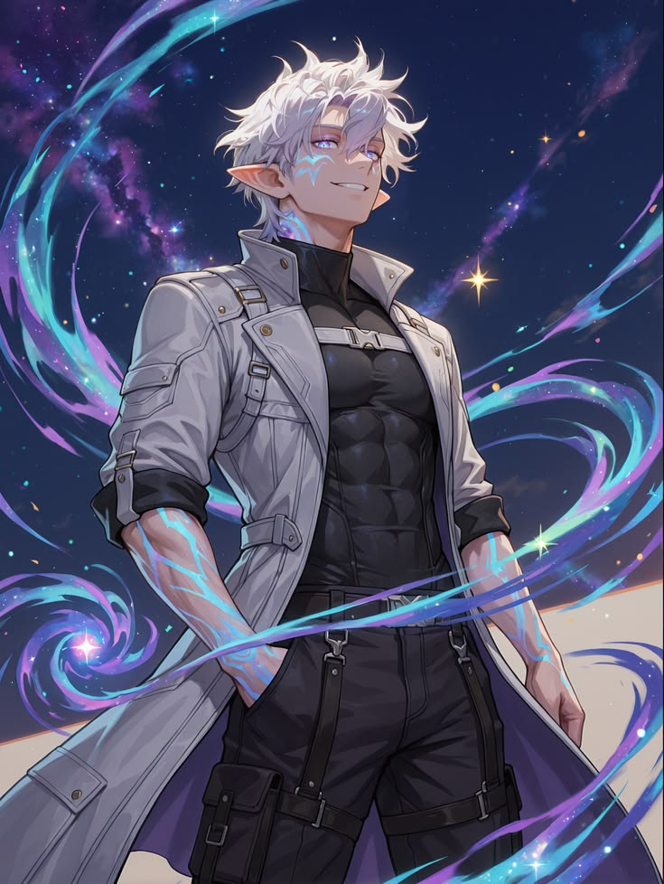
Astralis💀 Revenantes
Aqueles que RetornaramSeres que morreram e, por alguma razão, voltaram ao mundo dos vivos. Seus corpos carregam marcas relacionadas à própria morte.
- Status: 65 pontos para dividir entre Vida e Mana
- Atributos: +3 Resistência e +2 Espírito
- Habilidade racial: Além da Morte — resistência a efeitos de medo, morte e controle espiritual
- Bônus: não precisa comer ou respirar com a mesma frequência que seres vivos
- Especial: possui uma Marca da Morte, uma característica ligada à maneira como morreu
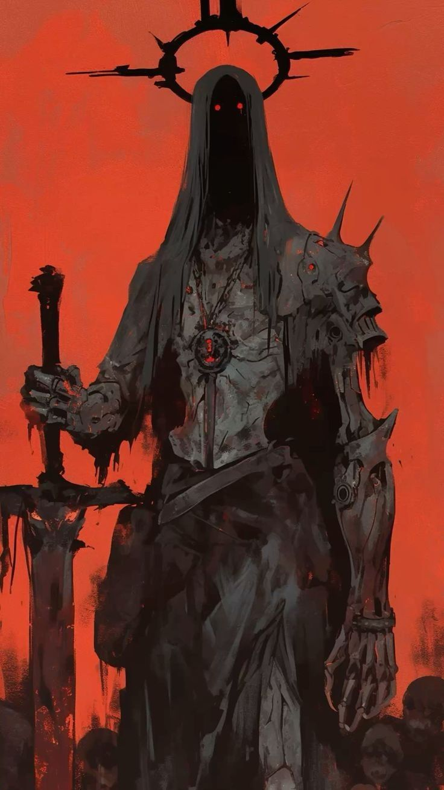
Revenantes Alados
Filhos dos CéusUma raça humanoide nascida com asas naturais. Diferente dos Serafins, sua origem não é necessariamente divina.
- Status: 50 pontos para dividir entre Vida e Mana
- Atributos: +3 Agilidade e +2 Percepção
- Habilidade racial: Voo Natural — pode voar utilizando suas asas
- Bônus: +2 em testes realizados enquanto estiver no ar
- Especial: suas asas podem desenvolver novas capacidades conforme a raça evolui
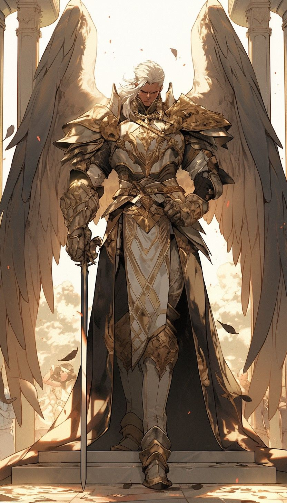
Alados🐍 Nagas
Filhos das EscamasUma raça antiga de seres serpentinos, conhecidos por sua resistência, inteligência e domínio sobre venenos.
- Status: 60 pontos para dividir entre Vida e Mana
- Atributos: +3 Resistência e +2 Intelecto
- Habilidade racial: Veneno Natural — seus ataques naturais podem aplicar uma pequena quantidade de veneno
- Bônus: resistência a venenos
- Especial: consegue trocar parcialmente de pele, recuperando pequenos ferimentos após um descanso
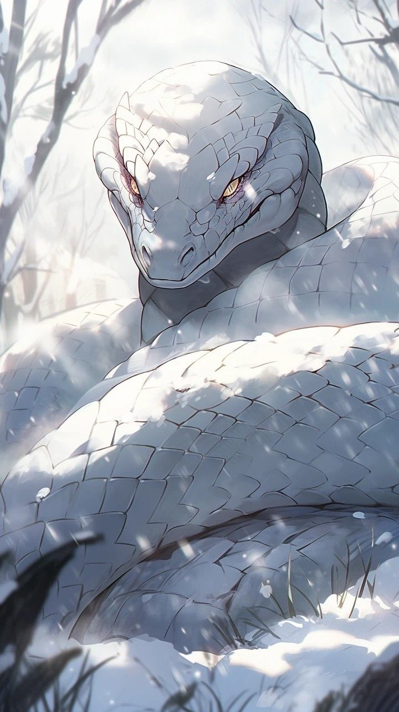
Nagas🐲 Draconianos
Sangue dos Dragões AntigosDiferentes dos Draconis, os Draconianos possuem sangue dracônico correndo diretamente em suas veias, tornando seus corpos mais próximos de uma criatura dracônica.
- Status: 65 pontos para dividir entre Vida e Mana
- Atributos: +3 Força e +2 Espírito
- Habilidade racial: Sopro Elemental — libera uma pequena rajada elemental causando 1d6 de dano
- Bônus: resistência ao elemento escolhido
- Especial: escolha entre escamas, chifres, garras, cauda ou olhos dracônicos
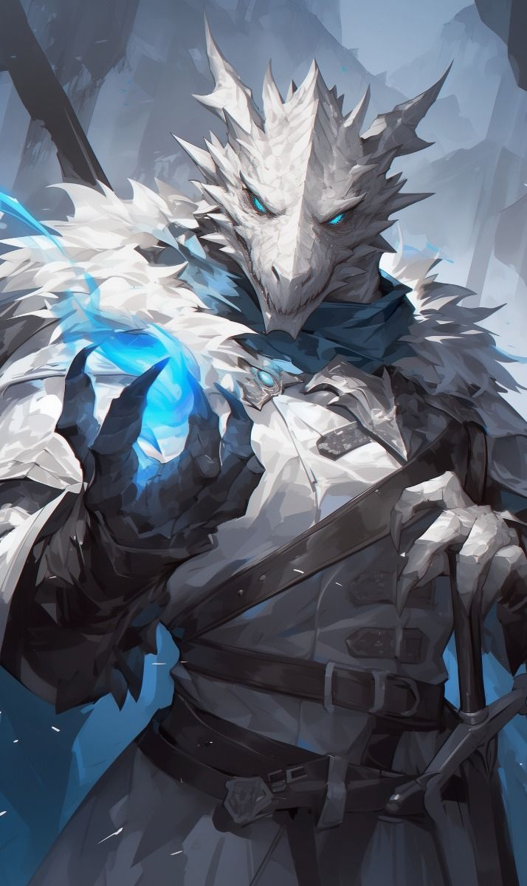
Draconianos